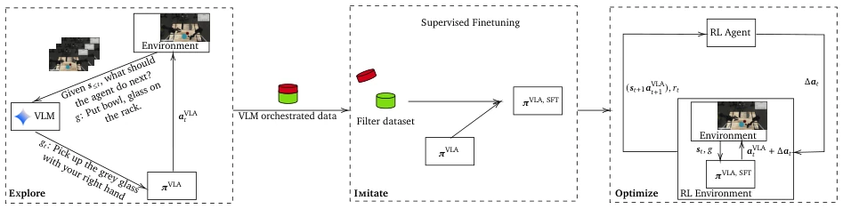
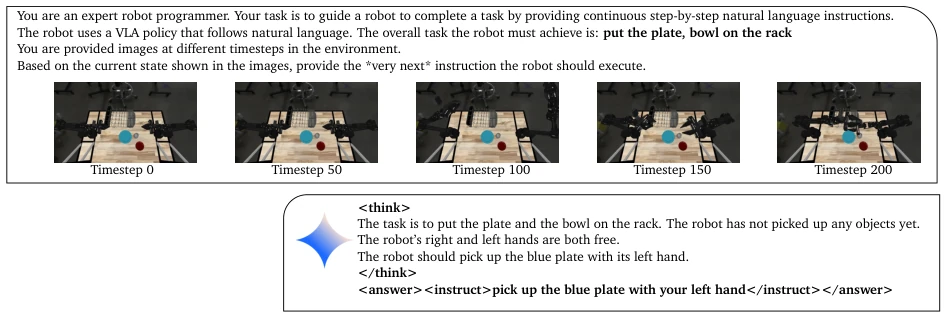
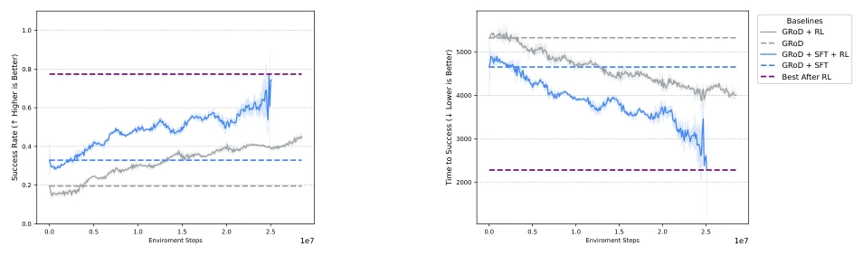
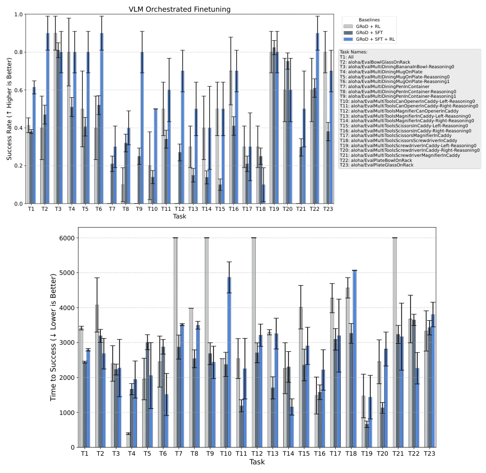
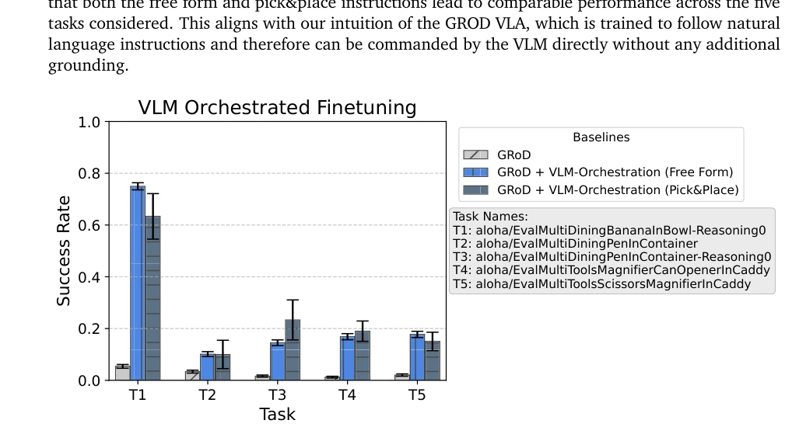
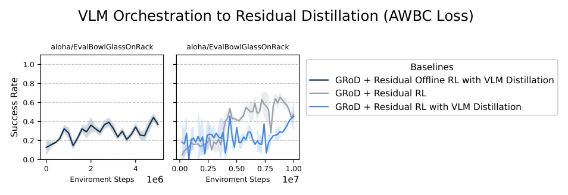
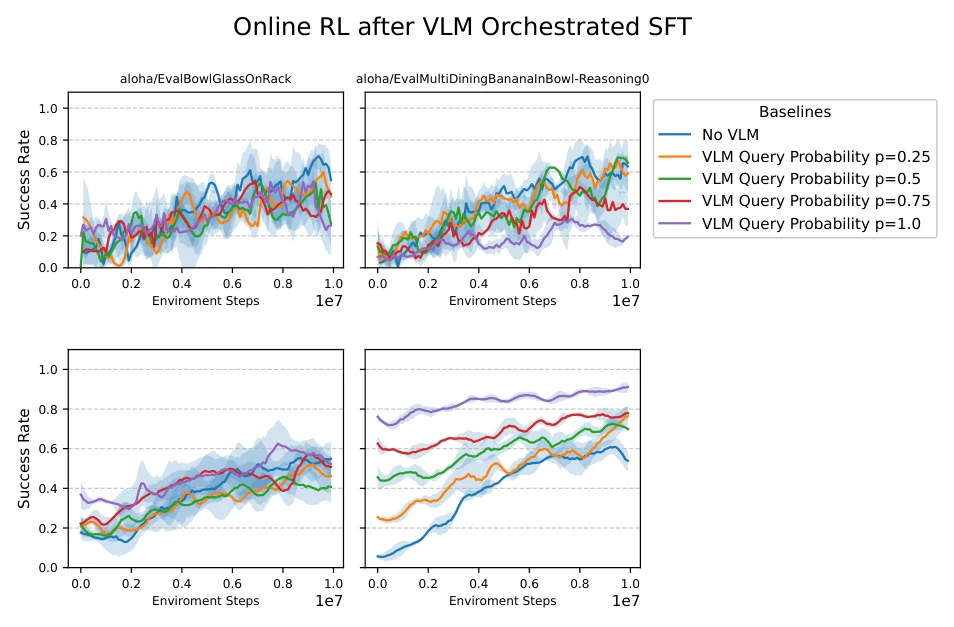

当前机器人策略微调面临两大痛点：一是基于遥操作的行为克隆（LBC）虽然样本效率高，但收集数据极其昂贵，且难以泛化到训练分布外的新任务（Barreiros et al., 2025; Black et al.）；二是强化学习（RL）虽然能自我改进，但在长程任务中样本效率极低，且VLA模型庞大，直接RL微调难度极大（Sutton, 2018）。现有的VLA模型（如GROD）擅长执行原子技能，但在处理需要推理、技能链式组合的长程任务时表现不佳。虽然已有工作利用LLM作为高层规划器（Ahn et al., 2022; Huang et al., 2022），但往往面临“落地”（Grounding）难题，即如何将自然语言指令转化为机器人可执行的动作。此外，利用VLM进行内在探索（Tam et al., 2022; Sancaktar et al., 2025）虽能提升探索效率，但通常仍需从头训练或仅用于奖励建模，未能有效解决VLA的样本效率微调问题。本文旨在填补这一空白，提出一种无需额外遥操作、能高效利用VLM知识来微调VLA的新范式。
—
方法Method
Eximo提出了一套“探索-模仿-优化”（Explore-Imitate-Optimize）的三阶段微调框架。第一阶段“探索”（Explore）：利用一个预训练的大规模VLM（如Gemini）作为“编排者”（Orchestrator）。VLM接收环境图像和自然语言目标，将其分解为VLA可执行的中间步骤或子目标（g_t），并实时指挥VLA执行。这一过程通过闭环交互收集数据，仅保留成功完成任务的轨迹存入缓冲区。第二阶段“模仿”（Imitate）：将第一阶段收集的高质量成功轨迹进行过滤，对VLA进行监督微调（SFT）。关键在于，训练时VLA直接以原始自然语言目标为条件预测动作，而非VLM生成的中间指令。这一步实现了“知识蒸馏”，将VLM的推理能力内化到VLA中，消除了推理时的延迟依赖。第三阶段“优化”（Optimize）：在SFT后的VLA基础上，引入残差强化学习（Residual RL）。训练一个残差策略网络（π_res），输出对VLA动作的修正量（Δa），最终动作 a = a_VLA + Δa。使用MPO算法进行离线/在线混合训练，进一步优化策略在稀疏奖励下的成功率。整个流程通过VLM的语义引导解决了长程探索难题，通过SFT实现了高效知识迁移，最后通过残差RL进行精细化调整。
—

Figure 1 | Eximo consists of three stages: Semantic exploration via VLM orchestration, where a VLM is used to command the VLA in natural language to accomplish a challenging task. The data from the VLM orchestration is used in the second phase for imitation learning, where the successful episodes are filtered and the VLA is finetuned via supervised finetuning on the filtered dataset. Finally, in the third stage, we use the finetuned VLA to perform residual reinforcement learning online.

Figure 2 | Example interaction of the VLM during the explore phase of Eximo. The VLM is given a sequence of images from the environment along with the task description in the prompt. The VLM analyzes the provided information within a <think> </think> block and provides an instruction in the <answer></answer> block for the VLA to execute.
Figure 3 | Success rate (top), time to success (middle), and episode length (bottom) of VLM orches- trated GROD, GROD with no orchestration, and GROD finetuned on the data collected from VLM orchestration. The baselines and the per-task legend (shared across all three plots) are shown on the right. Across the tasks, we observe that VLM orchestration achieves higher success rate than the model without orchestration. This illustrates the benefits of semantically guided exploration from the VLM. Furthermore, performing filtered SFT on the VLM orchestrated data gives additional performance gains in the success rate across the task, showcasing the advantages of distilling the VLM orchestrated trajectories into the VLA. The VLM orchestrated VLA also has a lower episode length and is therefore mo

Figure 4 | Online RL performance of GROD + SFT and the base GROD model averaged across twenty tasks. We run the base GROD model for more timesteps to compensate for the additional data collected via VLM orchestration for the SFT. Due to the finetuning on VLM orchestrated data, GROD + SFT starts with a higher success rate. The model also converges to higher success rates and the base GROD model does not achieve the same performance, despite running online RL for significantly more environment steps. We observe the same behaviour for time-to-success. The performance is averaged across five seeds and we report the mean with two standard errors. Note that time to success is only meaningful for tasks with non-zero success rate.

Figure 5 | Success rate and time to success post RL finetuning. We compare the performance of the VLA after SFT on VLM orchestrated data, after SFT + RL and the base GROD model after RL. Across all tasks, we observe that the model after SFT + RL outperforms the other two baselines. Note that time to success is only meaningful for tasks with non-zero success rate.

Figure 6 | Performance of VLM orchestrated GROD with free form orchestration and only Pick&Place commands. The former commands the model in natural language, whereas the latter only provides pick and place commands. We find that GROD benefits from the VLM orchestrators and is robust to the types of orchestration, performing on par for both free form and Pick&Place orchestration.

Figure 7 | Performance of VLM to residual policy distillation using AWBC for offline RL and residual RL during the online phase. Left: Performance during offline RL as a function of the offline dataset size. Right: Performance during the online RL phase. We observe that while the residual policy learns during the offline RL phase, it fails to benefit from it during the online RL one. This is most likely due to the distribution shift between the VLM orchestrated data (offline) and online rollouts. These results are obtained across three seeds and the mean performance with standard deviation is reported.

Figure 8 | Performance of VLM to residual policy distillation where the VLM is only used with probability 𝑝during the rollouts. Top row: We observe that not using the VLM yields the best performance across the tasks during evaluation, despite the VLM orchestration leading to significantly more success in the initial phases of data collection (bottom row). We believe this is because the residual policy cannot benefit from the VLM orchestrated tuples. These results are obtained across three seeds and the mean performance with standard deviation is reported.